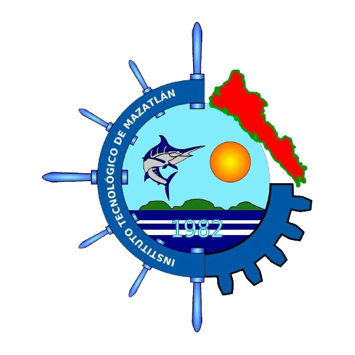
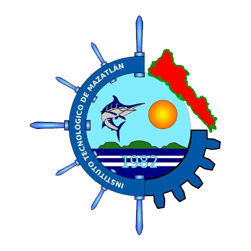

Derek Avila Garcia
Estudiante de Ingeniería en Sistemas Computacionales
.jpg)
 

Fecha de nacimiento: 30/11/2001
Edad: 22 años
Teléfono: (669) 2-06-76-50
Email: Derekjagg@gmail.com
Soy un estudiante avanzado de la carrera de ING. en Sistemas por el Instituto Tecnológico de Mazatlán bastante interesado en el desarrollo del backend, frontend y otras tecnologías de desarrollo. Cuento con una gran motivación para avanzar en mi carrera profesional y soy una persona amable, comprometida y responsable. Quiero mejorar mis aptitudes y habilidades.
2020-2024: Instituto Tecnológico de Mazatlán, Ingeniería en Sistemas (8vo Semestre)
2023-2024: Todo Code Academy, Curso de Bases de Datos (Finalizado)
2023-2024: Fundación Carlos Slim (aprende.org), Curso de Desarrollo Backend (En Curso)
2024 - AGAR IA: En el año 2024 participé en el Inovatec 2024 en colaboración con la facultad de bioquímica del ITMAZ en el cual nuestro proyecto fue desarrollado desde enero de este mismo año. Este consistía en una aplicación con inteligencia artificial capaz de reconocer bacterias en cajas petri, determinar su especie y sus enfermedades.
2023 - Punto de Venta Hamburguesas El Punto: Yo y un compañero realizamos como proyecto semestral un punto de venta para una negocio ficticio de hamburguesas en el cual se aplicó bases de datos y se desarrollaron las operaciones CRUD. El código puede ser visto aquí.
2018-2020 - Olimpiada Mexicana de Informática: En el año 2018 participé en la OMI junto a un equipo de programación de la preparatoria Rubén Jaramillo (UAS). De igual forma desde 2018 soy parte de un equipo de programación de él Instituto Tecnológico de Mazatlán.
Montaje del Centro de Cómputo Piso 2 de Sistemas: Mis compañeros de la especialidad de redes e IoT y yo realizamos la actualización del sistema de red de uno de los centros de cómputo, actualizando cableado, switches y asignando IP fijas a cada una de las computadoras de este centro.
- C++ (Desarrollo de aplicaciones por consola)
- Python (Desarrollo del proyecto AGAR IA con inteligencia artificial)
- C# (Desarrollo de un sistema de ventas como proyecto escolar)
- Kotlin, PHP y Android Studio (Desarrollo de aplicaciones móviles con conexiones a bases de datos)
- SQL (Bases de datos)
- PHPMyAdmin (Desarrollo de bases de datos con PHPMyAdmin)
- Java (Desarrollo de aplicaciones por consola y con interfaces básicas con bases de datos locales)
- HTML5 y CSS3 (Desarrollo de páginas web con estilos)
- Arduino (Desarrollo de proyectos de Robótica semestrales)